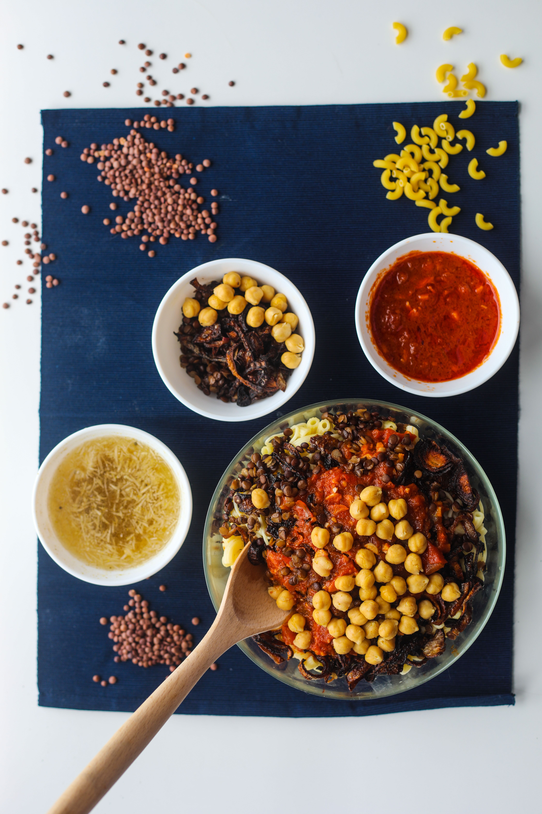

Egyptian Koshary

A delicious dish that suits all tastes
This recipe is one of the most famous recipes in Egypt.
It's a traditional food that is delicious and savory.
Ingredients 🍝
- 1 tablespoon olive oil
- 2 cups uncooked white rice
- 3 cups water
- 1 teaspoon salt
- 1 (16 ounce) package uncooked elbow macaroni
- ½ teaspoon salt
- 1 tablespoon olive oil
- 5 onions, minced
- 2 cloves garlic, minced
- 3 tablespoons distilled white vinegar
- 4 ripe tomatoes, diced
- ½ cup tomato paste
- 2 teaspoons salt
- 1 teaspoon ground black pepper
- 2 teaspoons ground cumin
- 1 teaspoon cayenne pepper
How to prepare this delicious dish? 👨🍳 🤤
- Heat 1 tablespoon vegetable oil in a saucepan over medium-high heat.
Stir in rice; continue stirring until rice is coated with oil, about 3 minutes.
Add 3 cups water and 1 teaspoon of salt.
Bring to a boil; reduce heat to low, cover,
and simmer until the rice is tender and liquid
has been absorbed, 20 to 25 minutes.
Check Other Recipes